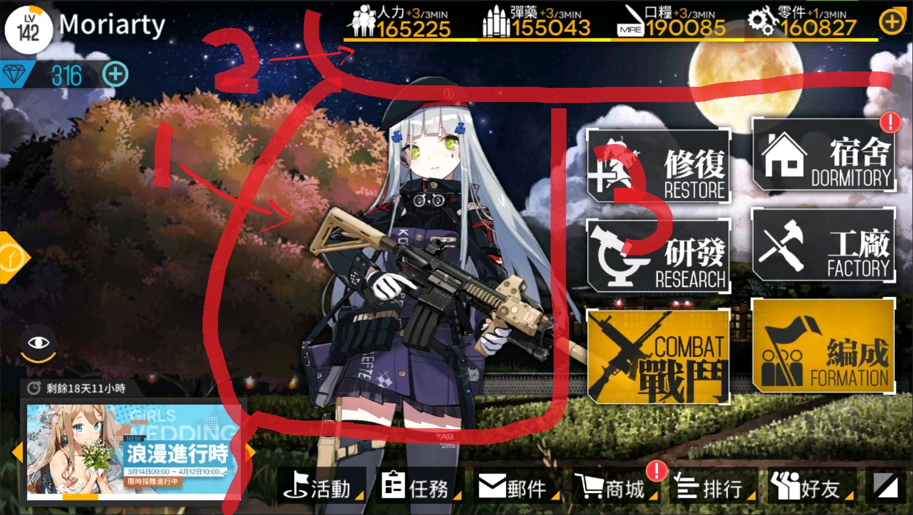
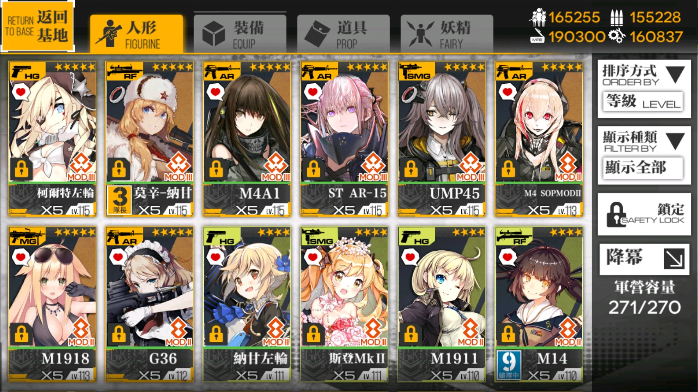
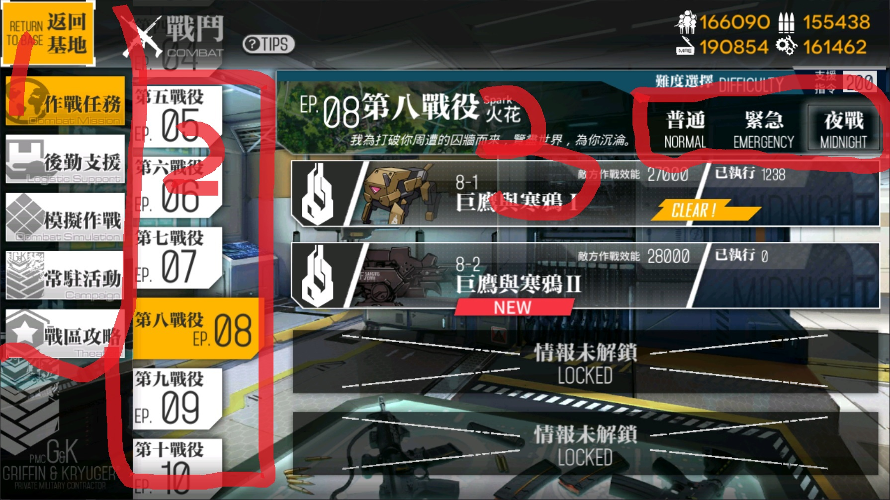
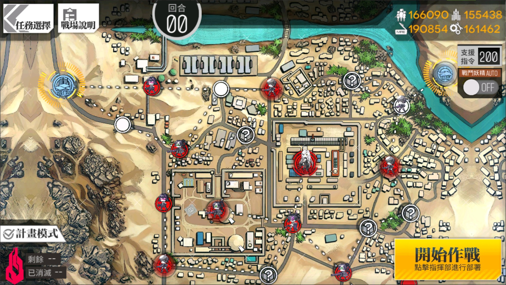

首頁畫面
1.副官
從自己擁有的人形中選出一位來當副官，通常會選擇新出的人形或者老婆
2.物資
物資在作戰、活動時會消耗，可以自然恢復也可以用後勤來增快回復速度，各項物資的上限為30萬
3.行動
可以藉由這些按鈕來決定要進行什麼活動，像是作戰、製造人形、人形維修、好友拜訪......等
倉庫管理
1.人形
對擁有的人形進行資訊確認、裝備編輯的地方，最重要的是誓約也是這邊進行
2.裝備 & 妖精
確認自己擁有的裝備配件、妖精，可至工廠強化、製造、拆解
3.道具
檢視所用有的道具，如要使用道具請至適當的地方使用


戰役選單
1.戰役種類
可以選擇普通作戰、後勤支援、模擬作戰、活動戰役、戰區，每種作戰種類皆有各自的用途
2.章節選擇
選擇想要打的章節和關卡
3.難度選擇
選擇關卡的難度，注意：不同難度同編號的關卡地圖不一定相同
4.關卡簡稱
緊急:e 夜戰:n 例如：普通1-1 >> 1-1、緊急4-3 >> 4-3e、夜戰8-1 >> 8-1n
作戰地圖
1.指揮部 & 機場
提供己方在戰鬥開始前部署梯隊的地方，在作戰開始後梯隊可在機場及指揮部進行補給及撤離，注意：己方指揮部被佔領會視為敗北，請守好
2.紅點、藍點、白點
紅點為敵方佔領處、藍點為己方、白點為無勢力範圍，如有第三方勢力則以黃點表示
3.敵方單位
簡略分為BOSS跟小兵，打小兵時須注意戰損如果HP歸零會降低人形好感度，打BOSS時則不會
